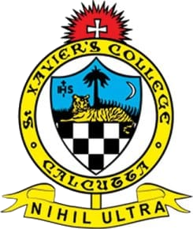

A curious mind with a practical approach.
I'm Pradyumn Goenka, 21, a final-year B.Com (Hons.) student at St. Xavier's College, Kolkata. I'm curious about marketing, finance and AI, and I learn best by doing, not just reading about it. That's taken me into a few real roles. At Swiggy I worked on onboarding and growing restaurant partners, and brought on 15+. At Data Driven Labs I worked on AI tender intelligence, helping make sense of large volumes of tender data. I also co-founded CredEdge, a student venture rethinking how first jobs are found, which taught me how much work sits behind a simple idea. Outside work, I take part in competitions, and I've won over ₹30K in prize money so far. I'm still early in my career, and I know it. What I'm looking for is a team where I can keep building real experience, one project at a time, and be useful while I learn.
